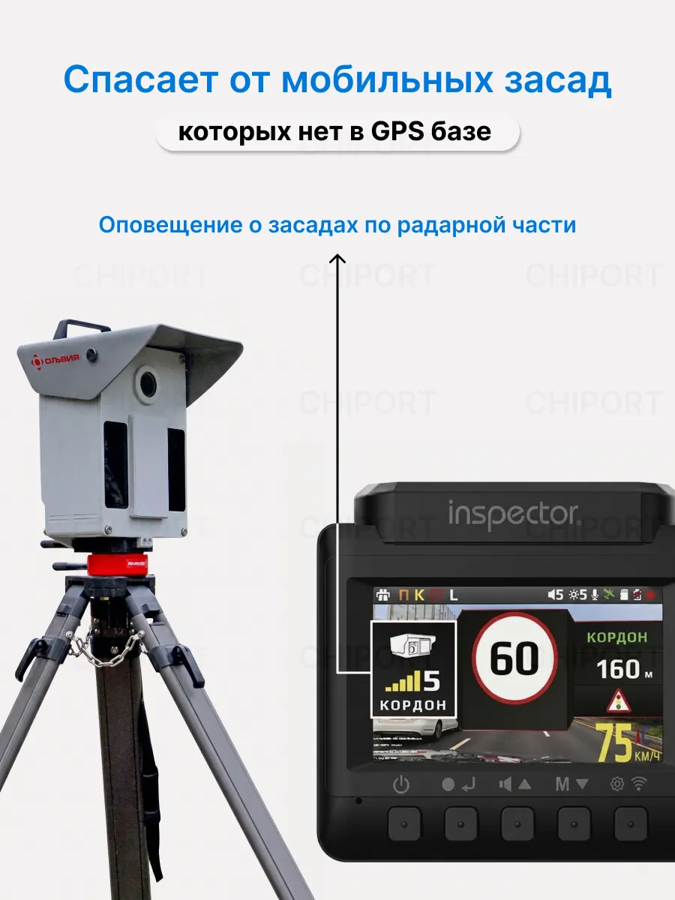
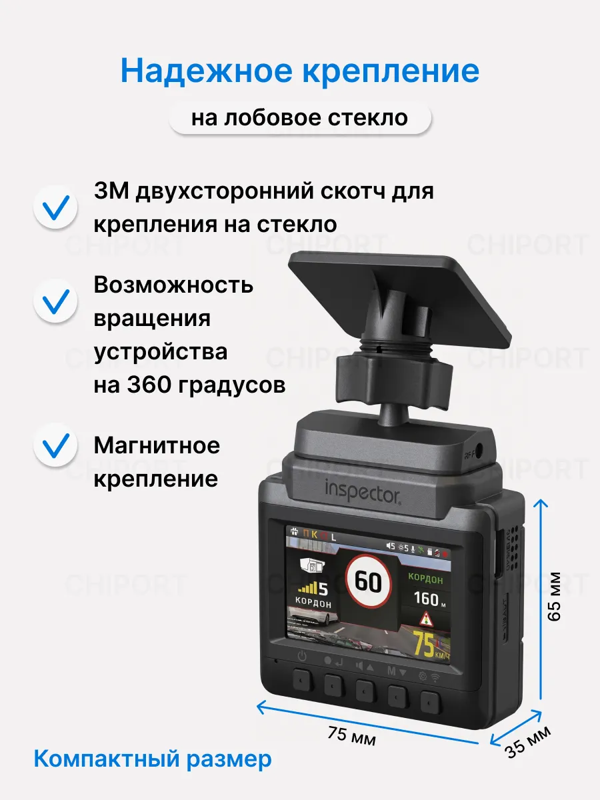
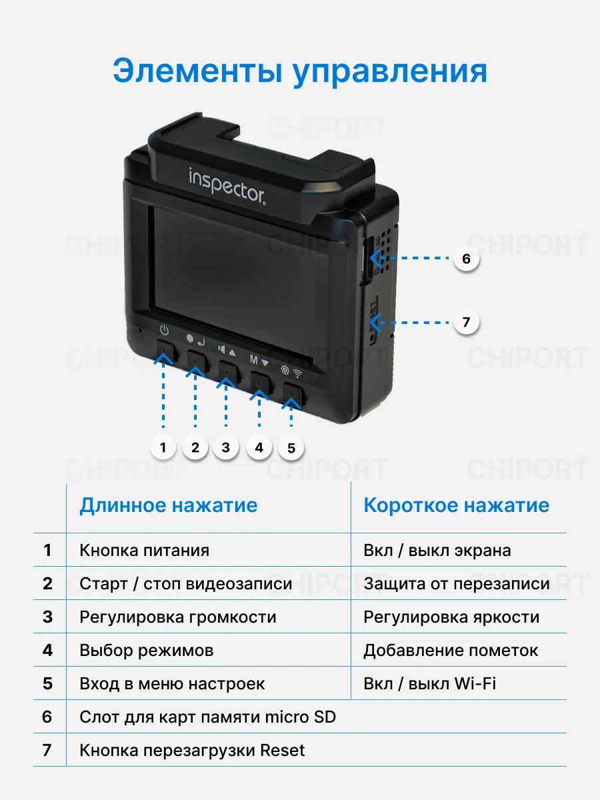
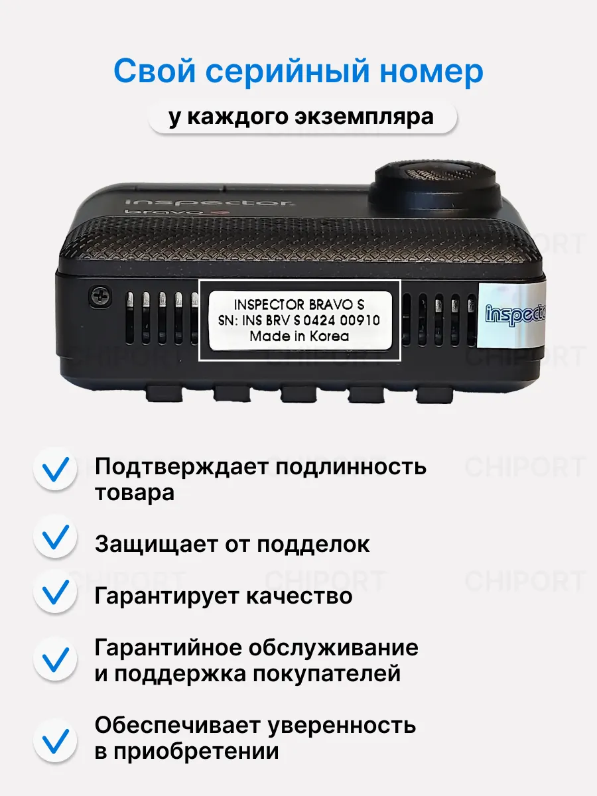
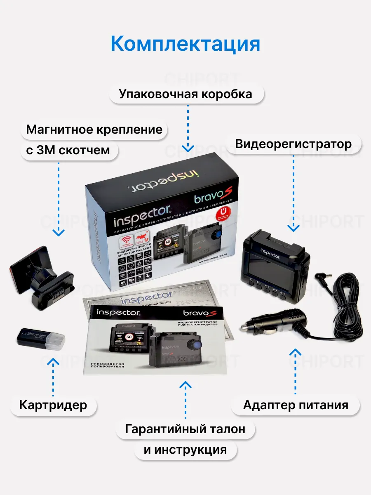
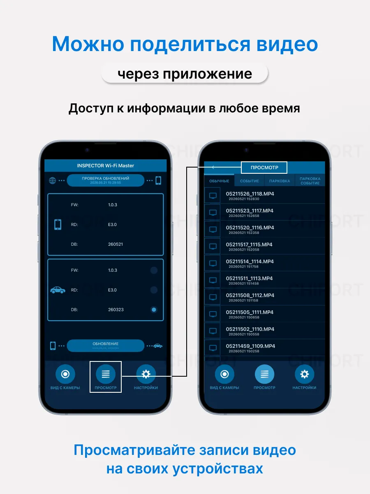
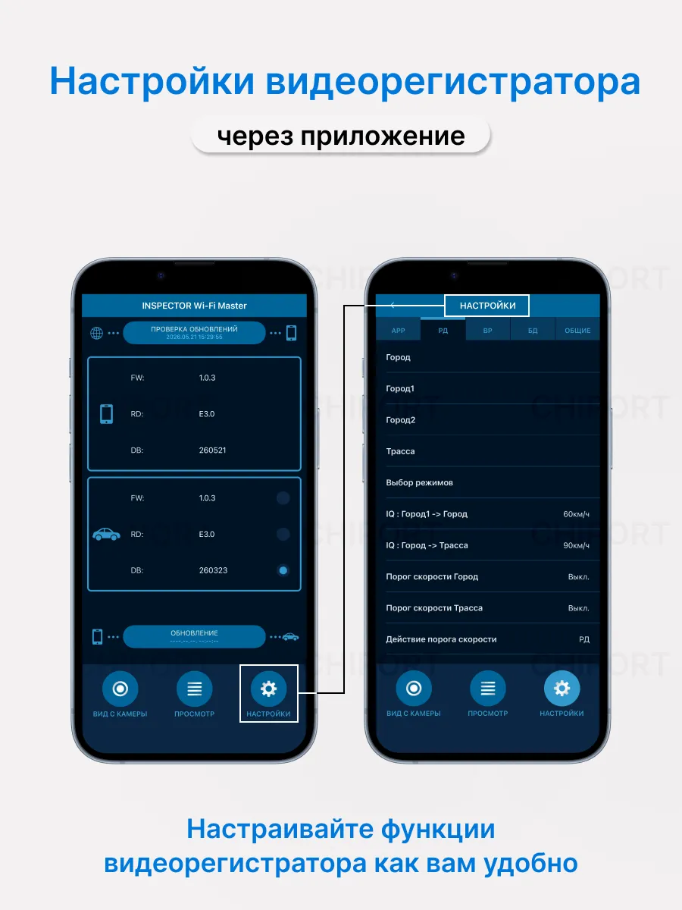
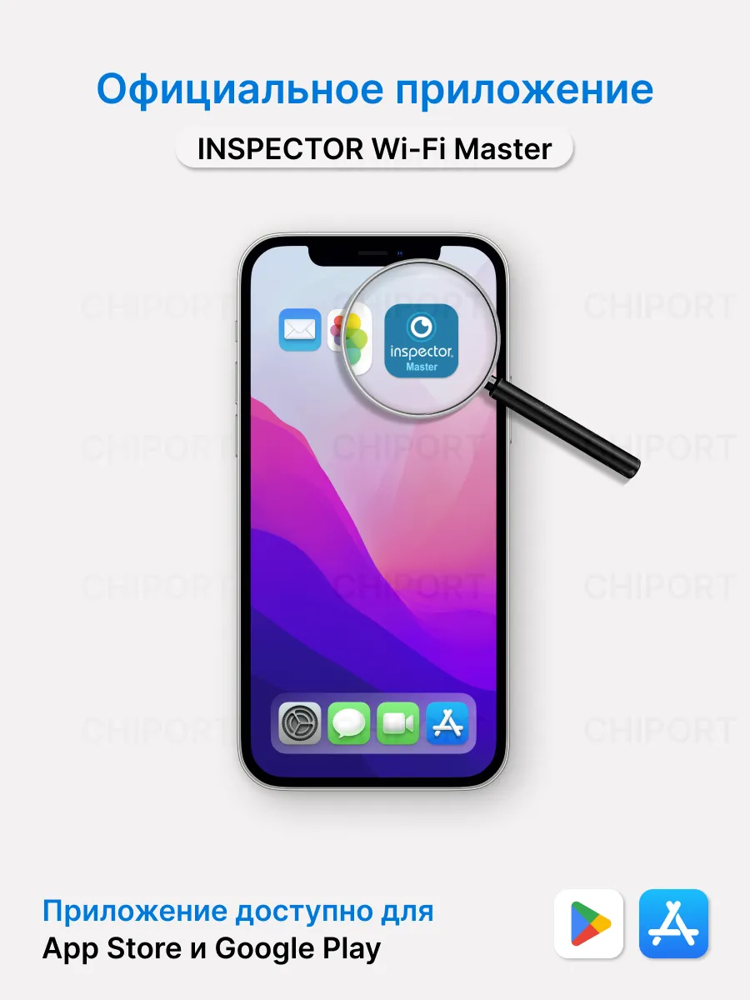
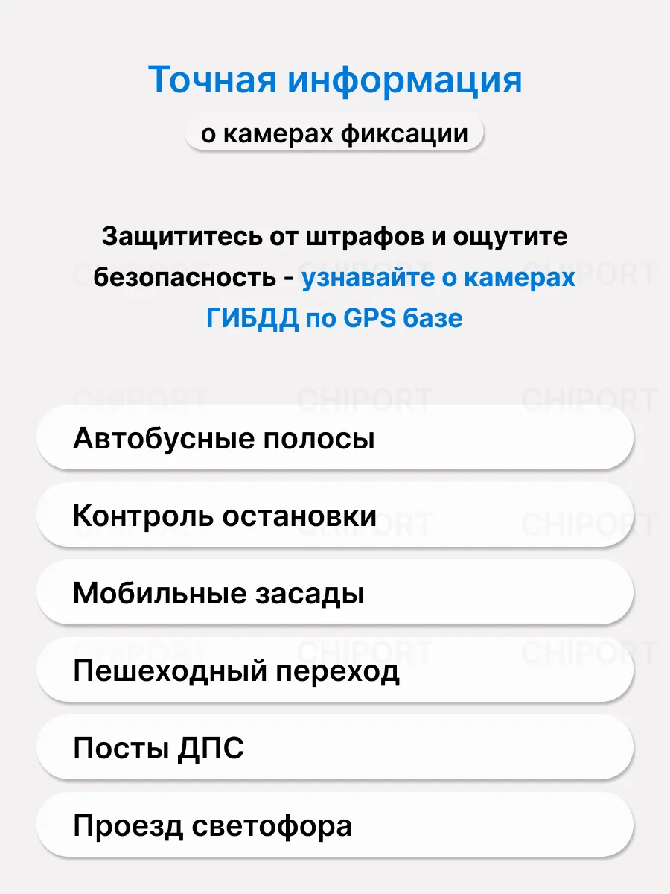

Сигнатурный радар-детектор с LNA усилителем и видеорегистратор Full HD в одном корпусе.
Комбо устройство разработано и произведено в Южной Корее с использованием передовых технологий.
GPS-база знает стационарные камеры: они годами висят на одних и тех же столбах. Треногу вчера поставили на обочине, сегодня перенесли на другой километр — в базе её нет и не будет. Радарная часть ловит такие комплексы по сигналу, а не по координатам.

Площадка на двустороннем скотче 3M остаётся на стекле, прибор садится на магнит. Снять на мойку или убрать из машины на ночь — одно движение, без раскручивания и без присосок, которые отклеиваются на жаре.

Прибор соединяется с телефоном по Wi-Fi через приложение INSPECTOR Wi-Fi Master. Единая база камер России и стран СНГ обновляется ежедневно — новые комплексы попадают в прибор сразу, а не через год вместе с прошивкой.
У каждой кнопки два действия: короткое нажатие и длинное. Ничего не нужно искать в меню на ходу.
На боковой грани — слот для карты памяти micro SD и кнопка перезагрузки Reset.

Номер нанесён на корпус прибора. По нему подтверждается подлинность устройства и работает гарантийное обслуживание — с подделкой этот номер не совпадёт.






Оформление, оплата и доставка — на стороне Wildberries. Проверить устройство можно при получении в пункте выдачи.